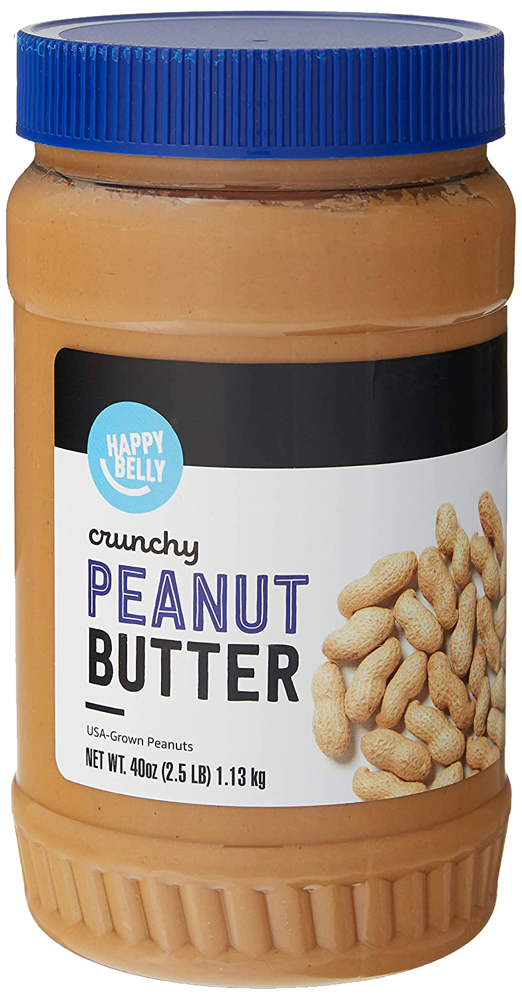
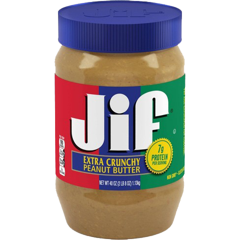
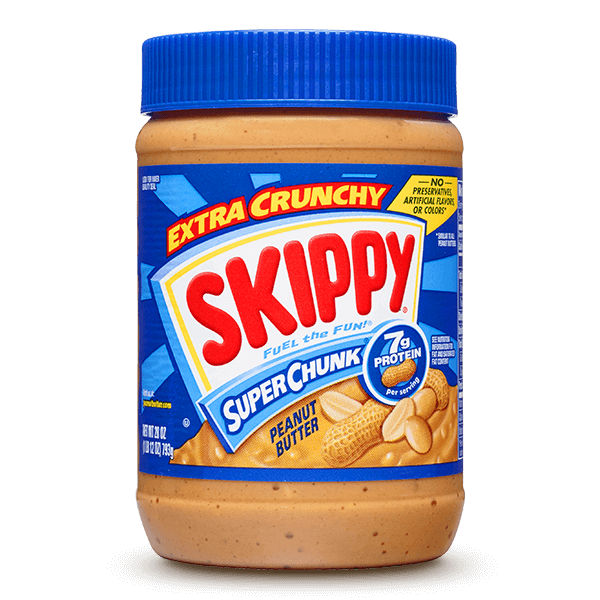
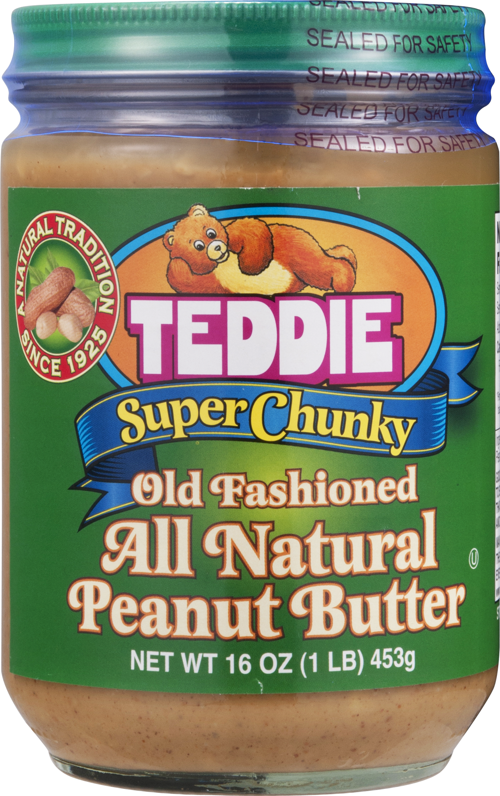

My view and opinions on Peanut Butter: If peanut butter is to wear the word-pants, then it only follows that its texture should be dominant. Girth. Body. Volume. Stature. If a sandwitch be solved mathematically, bread is soft, jelly is squishy, and peanut butter is the variable. The given is that a sandwitch should achieve textual equilibrium. As such the only choice for peanut butter is crunchy!
The following are examples of crunchy peanut butter from more established brands. My favorite/ also my family's go-to brand is Skippy for its exeptional crunchyness starting off the day off on the right foot.
Happy Belly

Happy Belly Crunchy Peanut Butter
Tee Yih Jia Food Manufacturing Pte Ltd (simplified Chinese: 第一家), is a food manufacturing company headquartered in Singapore. Tee Yih Jia is the world leading manufacturer[1] of spring roll pastry (also known as "popiah" in local context) that also manufactures a wide range of ready-to-eat Asian convenience foods such as roti paratha, crepes, cocktail prawn rolls, glutinous rice balls, spring rolls and samosas. Apart from pastry-based food, Tee Yih Jia manufactures other frozen convenience food products such as Dim Sum, Ramen, Oriental Buns (or mantou), and Asian Pizzas with flavours like Peking duck and satay chicken.[2]
Happy Belly (Chinese: 家乐宝; pinyin: Jiālèbǎo) is a brand used by Tee Yih Jia to market its oriental range of frozen food products such as gyoza skins, wonton skins, Peking Duck wrappers and oriental bread (i.e. mantou, which comes in plain, chocolate and pandan flavours).
JIF

JIF Crunchy Peanut Butter
Jif is an American brand of peanut butter made by The J.M. Smucker Company, which purchased the brand from Procter & Gamble in 2001.[1] In 1955, Procter & Gamble bought Big Top peanut butter from William T. Young of Kentucky and, in the ensuing years, reformulated and rebranded it to compete with Skippy and Peter Pan. P. & G. named its product Jif, used oils other than peanut oil in its hydrogenation process, and sweetened the recipe, adding sugar and molasses. The original Creamy and Crunchy style Jif peanut butters both debuted in 1958. In 1974, Extra Crunchy Jif was introduced, followed in 1991 by Simply Jif, a peanut butter variant with low sodium and less sugar than regular Jif. Reduced Fat Jif was introduced three years later in 1994.[2] In 2014, Jif Whips was released as the first whipped peanut butter.
Skippy

Skippy Crunchy Peanut Butter
Skippy is a brand of peanut butter manufactured in the United States and China. First sold in 1932,[1] Skippy is currently manufactured by Hormel Foods,[2] which bought the brand from Unilever in 2013.[3] It is the best selling brand of peanut butter in China and second only to the J.M. Smucker Company's Jif brand worldwide.[4]
Percy Crosby, creator of the popular "Skippy" comic strip (1923-1945), which had been adapted into the 1929 novel Skippy, the daytime, children's radio serial Skippy (1932-1935), and the Oscar-winning 1931 film Skippy, had trademarked the name "Skippy" in 1925. When in 1932 the Alameda, California, food packer Joseph L. Rosefield began to sell its newly developed hydrogenated peanut butter, which it labeled "Skippy" without permission,[5] Crosby successfully had the trademark invalidated in 1934. Rosefield persisted using the name and after Crosby was committed to an asylum and after the passage in 1946 of the Lanham Act, Rosefield was granted rights to the trademark.[6]
Teddie

Teddie Crunchy Peanut Butter
The Leavitt Corporation is a manufacturer of nuts and peanut butter, formed by Michael Hintlian in 1925. The company's manufacturing facility is located in Everett, Massachusetts, just north of Boston. Leavitt employs approximately 70 employees. The company is a third generation family-owned and operated company. Current owners consist of a daughter and grandchildren of founder Michael Hintlian in addition to executive management[citation needed]. Leavitt's CEO currently is Mark Hintlian who succeeded his father James T. Hintlian in 2007[citation needed]. Leavitt produces several products under three primary brand names: Teddie Peanut Butter, Americana and River Queen Nuts. Leavitt also produces nut butters and mixed nuts under a variety of private labels. Leavitt prides itself in strict adherence to food safety and quality standards and proudly holds a level III SQF food safety certification. Leavitt products are exported internationally to countries such as Switzerland, Serbia, Croatia, UK, Germany, Japan, Saudi Arabia, Russia, Brazil, Argentina and Panama.
Teddie, the staple brand for the company's peanut butter, is manufactured in a variety of different forms and is the number one selling natural peanut butter in New England. The "Old Fashioned Peanut Butter" comes in 16-ounce jars, available in smooth, super chunky, unsalted, and unsalted super chunky varieties. In addition, there are the "All Natural" and "Homogenized" versions. The All Natural also branch into different variations including organic, flax seed oil, and a combination of the two. The Homogenized peanut butter is an inorganic product.[1]